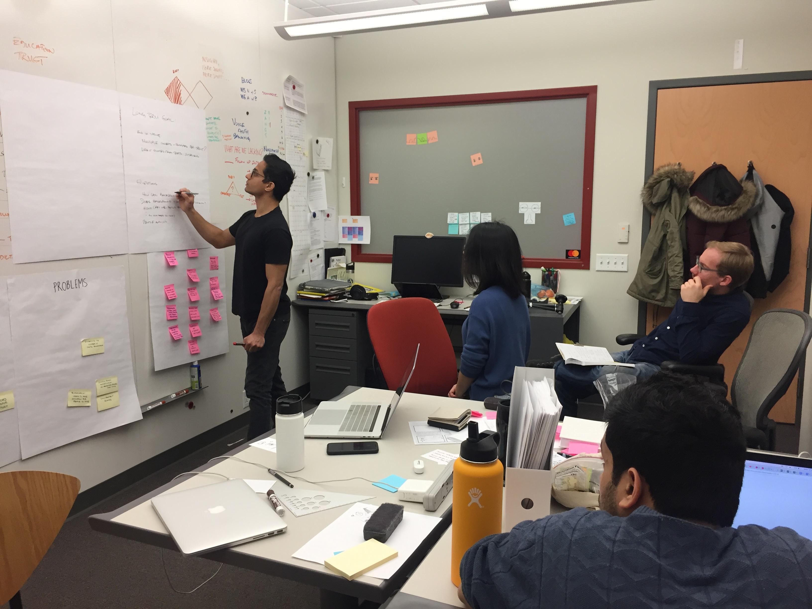
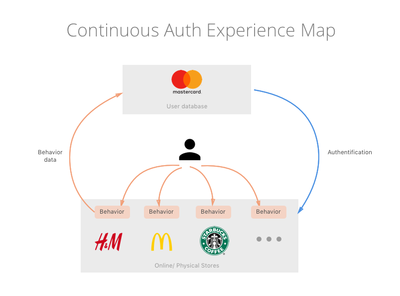
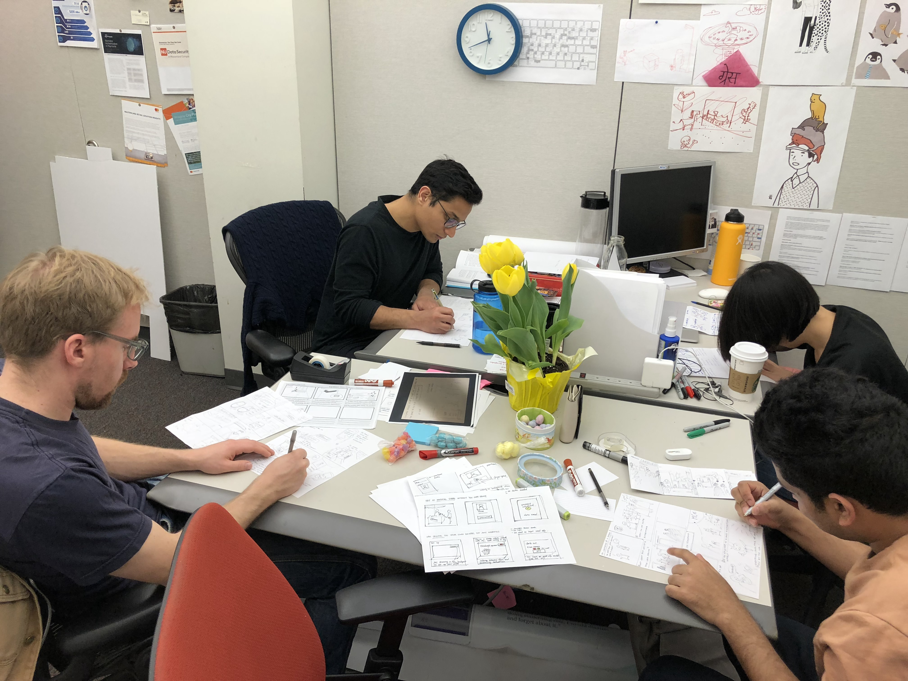
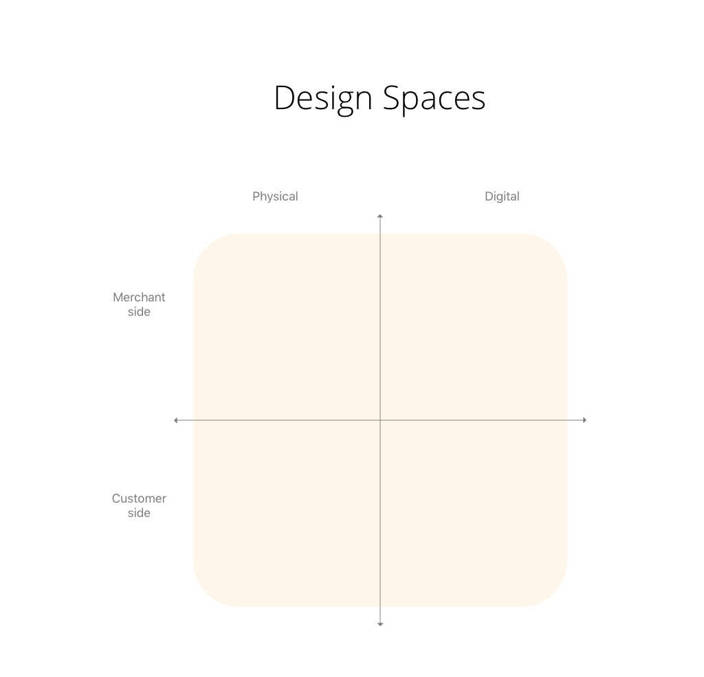
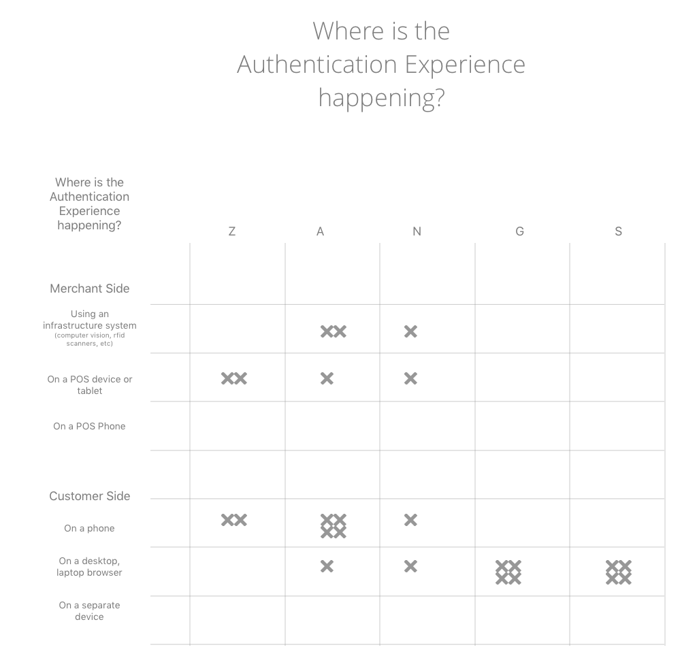
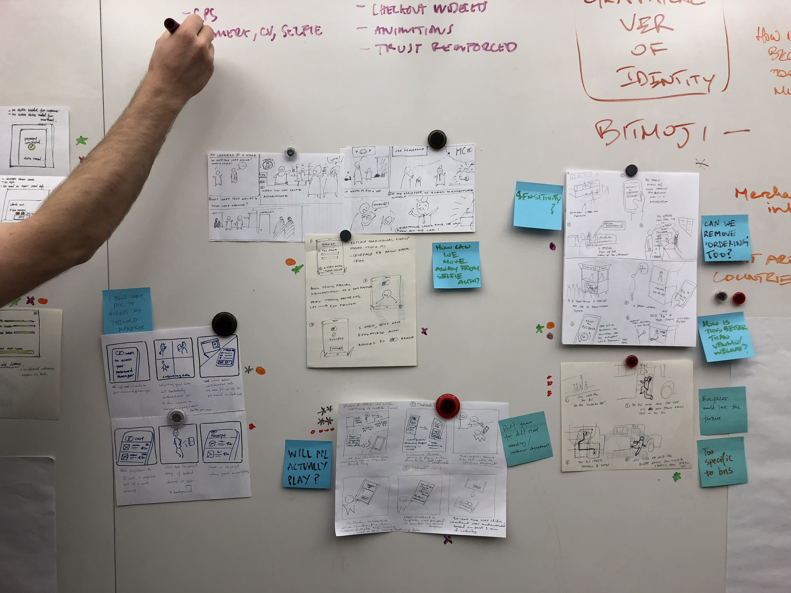
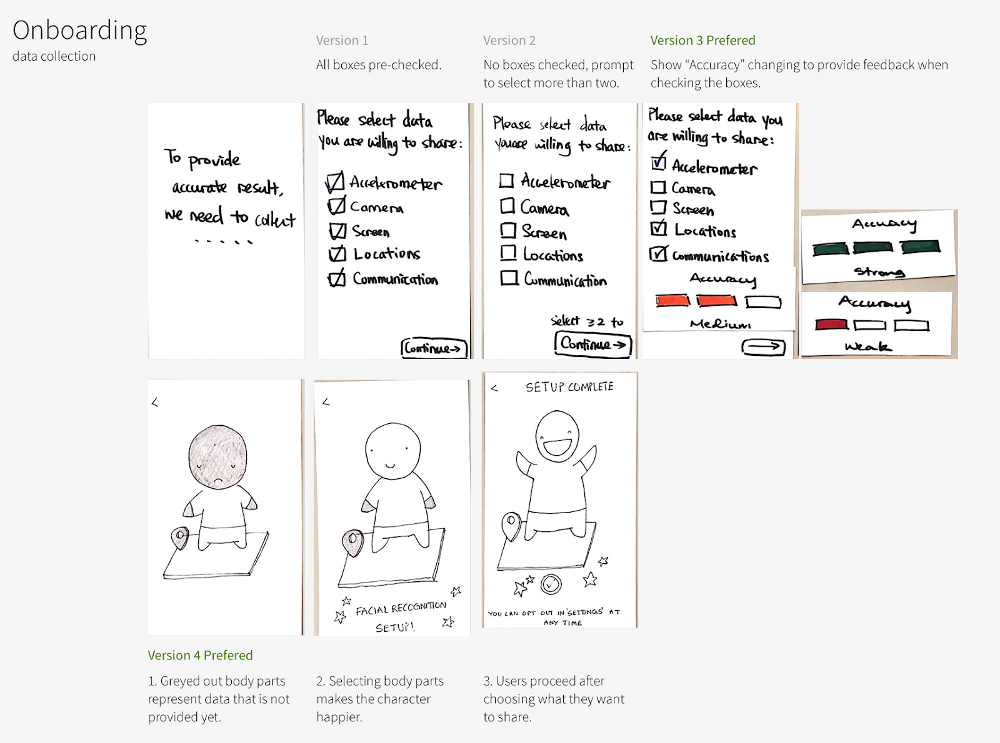
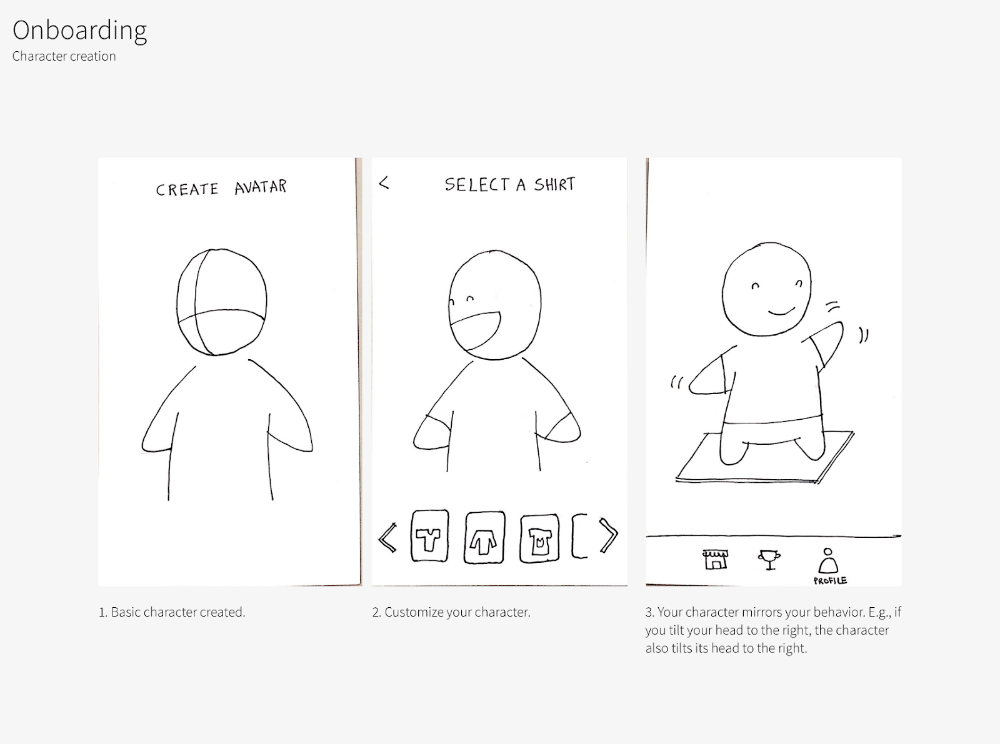
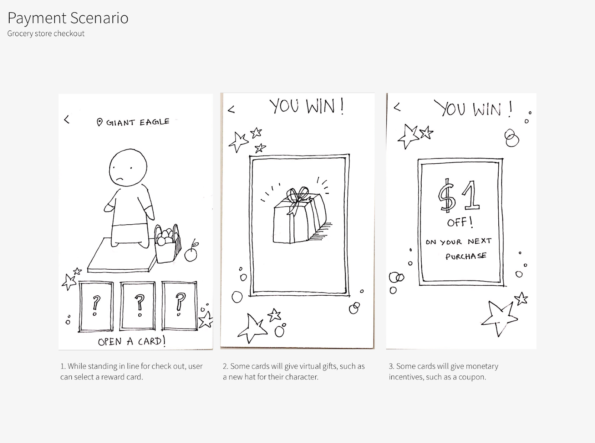

After our End of Discovery Presentation, we had lots of client feedback and suggestions for where to go next. This week marked the start of our first Design Sprint of the semester. We are trying to follow the Google Ventures Sprint methodology, but stretching the sprint over two weeks instead of one.
We spent most of Monday going over the feedback from the presentation and trying to narrow down what our first Design Sprint is going to be. There was lots of interest around Continuous Authentication, and some around multiple identities, but less around social activation. Our team and the client agreed that cognitive biases and merchant adoption inertia will play a role in whatever we pursue.
In class on Monday we had a productive crit session with the PNC group. We each shared how the End of Discovery presentations went and how we’re going to start the design sprints. It was interesting to compare our project with another financial services group, but with very different parameters. They are primarily working on enterprise, B2B banking and contract procurement. Think large corporate payments over 30-60 days. They have a suite of products to examine that aren’t currently working well and are more narrowly scoped. Ours is more consumer focused and more blue sky. Nonetheless, it was very helpful to share strategies and get a gut-check on how we’re proceeding.
On Wednesday, we started the sprint in earnest. We began asking some hard questions: What is our goal for the sprint? What are some questions we want answered by our prototypes? And if we failed this project somehow (totally hypothetically), what would be some factors that contribute to that?
Goals:
By the end of the next 5 weeks, we want:- Multiple concepts and prototypes that have been user tested, a minimum of three
- Direct quotes from tests and interviews that we can share
- Awesome visual diagrams and design artifacts that show our thinking
- With Continuous Authentication, how are consumers onboarded?
- How can we build trust in a Continuous Authentication system?
- How can we make the technology clear to the consumer? To MasterCard?
- How can the technical aspects be shown? Do they even need to be shown?
We did individual brainstorming and sketching, and this immediately uncovered some different ideas among the team. We had tons of questions around continuous authentication and biometric data. Where is the data stored? Where is the interaction taking place - on the customer’s device or the merchants?
To clarify how the authentication process currently works, we sketched (and re-sketched) this sequence flow map of where and how the card data flows. A customer tries to buy something at a store, the merchant swipes their card, data goes to Mastercard and the bank to verify it’s the cardholder and they have the credit to make the purchase. This is then repeated at other stores similarly.
What if the authentication method lives on a customers device, and they don’t have to re-swipe their card from one store to the next?
We broke down the problem space into a 2x2 matrix of Physical, Digital vs. Merchant, Customer. Each teammate sketched a short storyboard for each combination of these. This framework helped satisfy various ideas people wanted to express, and in the end we realized more were alike than different.
Friday we shared more sketches and storyboards with each other and asked more questions about how continuous authentication actually works and which solutions may be viable.. Many solutions revolved around similar design solutions and we realized that the division between merchant and customers is a bit false - all solutions included both as two sides of the same coin.
This chart above shows a mark for each person’s storyboard and where the authentication experience is taking place. It took a lot of discussing around this to figure out various methods we came up with, but it seems we have lots of interesting design concepts we will have to pare down and run with next week.
Week Two

Since we spent a fair portion of the first week figuring out how the design sprint is going to work and chewing over the client feedback, we still had lots of ideas and hadn’t narrowed down the scope by the end of the week! By the end of the first Friday we each had a couple storyboards for ideas we would like to pursue. The only thread was that it had to probe the research question of “How much personal information do people really want to see if it’s being collected in a Continuous Authentication scenario?”
Everybody had one storyboard surrounding a digital shopping experience and a physical one. We opted to meet on Sunday with a more refined storyboard, picking our individual favorites to develop and share. Then Monday we had one more last sprint - Crazy Eights! With this exercise, you have 2 minutes each to develop a sketch around your storyboard and then move on to the next one. It’s a fast way to get lots of ideas on paper quickly.
After a quick round of sharing, we pinned up on the board and voted. Everyone gets 3 votes, and Aroon, being the “Decider” for the week, gets a super-vote. In the end we decided on a two pronged focus - one series of prototypes were smaller and focused on UI elements in a typical digital payments online scenario that would let the user know continuous data collection is enabling them to pay faster. The second was a more speculative exploration of how people may opt-in to a continuous authentication program in a physical store. The ideas around it involved microgames, waiting in line, and personal avatars. The ideas weren’t really focused but we felt there was enough interest there to pursue.
Here are the results of our prototypes:
Prototype 1: Web Checkout UI Flows
Problem Statement
We identified a few major questions to answer regarding users perceptions of continuous authentication. Assuming background data collection needs to be running in a continuous manner…:
- How much do people want to see the details of background data collection?
- Do they perceive background data collection as creepy? Trustworthy? Transparent?
- Is transparency a requirement for trusting the system?
Prototypes and Testing
Prototype 1: Web Checkout UI Flows
Problem Statement We identified a few major questions to answer regarding users perceptions of continuous authentication. Assuming background data collection needs to be running in a continuous manner…:- How much do people want to see the details of background data collection?
- Do they perceive background data collection as creepy? Trustworthy? Transparent?
- Is transparency a requirement for trusting the system?
Prototypes and Testing
We made a series of mid-fidelity prototypes for a small business checkout page for a desktop browser user. The small business, Haptic Labs, sells handmade softgoods and sundries. Their website uses Shopify for checkout and e-commerce.
Our prototypes test 3 various checkout flows with UI widgets that show data collection is happening, to various degrees. When we realized how critical on-boarding was, we also created a quick onboarding flow as well. We showed these in increasing order of invasiveness and probed test subjects on their feelings regarding data collection.
InVision Prototypes here: User TakeawaysUser Feedback
- No one wants to use camera in browser to authenticate.
- Onboarding is critical to both EXPLAIN what Continuous Authentication is and OPT IN
- Must ask permission clearly, “Is it ok to use…” this and that data point?
- Permission can’t be buried in a EULA
- A “Chain” metaphor of authentication factors… if one fails, a new one needs to kick in to remain secure
- A series of animations/gifs that show what data is collected while asking/educating.
Prototype 2: Playing the In-Line Waiting Game
Problem StatementWaiting in line at a grocery store is a pain. Waiting for your check to come back at a restaurant after dinner is a pain, paying with your card or phone in a drive-through at McDonalds is a pain.
By using continuous authentication technology, we designed an experience that allows users to securely make payments in all these situations securely (n-factor) without having to take their phones or cards out of their pockets.
IntroductionWe designed and prototyped a convenient experience that encourages users to provide their biometric information like facial data, typing patterns, location data, etc. which we will use to continuously authenticate them.
ConceptUse personalised avatars to provide a secure and familiar way to collect users’ biometric information.
   Feedback- How can we succinctly convey the value of continuous authentication to the average person?
- In a physical space, how can this technology be more convenient than Apple Pay, or even just using your card?
- How do we position the product?
- Speed
- Security
We spent Thursday conducting user tests, which were extremely valuable to us. We found that language was the most important attribute when user testing. Terms such as Accelerometer mean nothing to non-tech people - and it just confuses them. In fact, when choosing what data to share, one user ended up selecting items such as Camera and Location, two things which people are generally more hesitant to provide, only because those were the ones they understood.
Even having the term ‘Accuracy’ isn’t consumer-centric enough. Users asked what ‘Accuracy’ meant and we needed to explain it to them. Going forward, we will change this term to something customers value - such as speed, or ease of use. People preferred the Weak - Medium - Strong scale when choosing what sensor data to share with the app. It reinforces their mental model they have during password creation. Having a fluctuating percentage was a lot more confusing. We also asked which data users feel least comfortable sharing. Amongst the five, 'Screen' and 'Camera' seem to be the most personal, and most sensitive.
Next week we’ll start on to our second sprint, a little wiser and a little more prepared to jump in sooner and start prototyping.